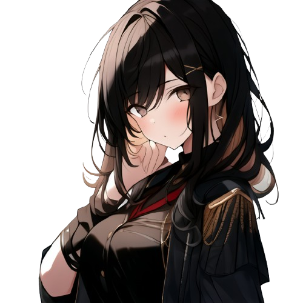
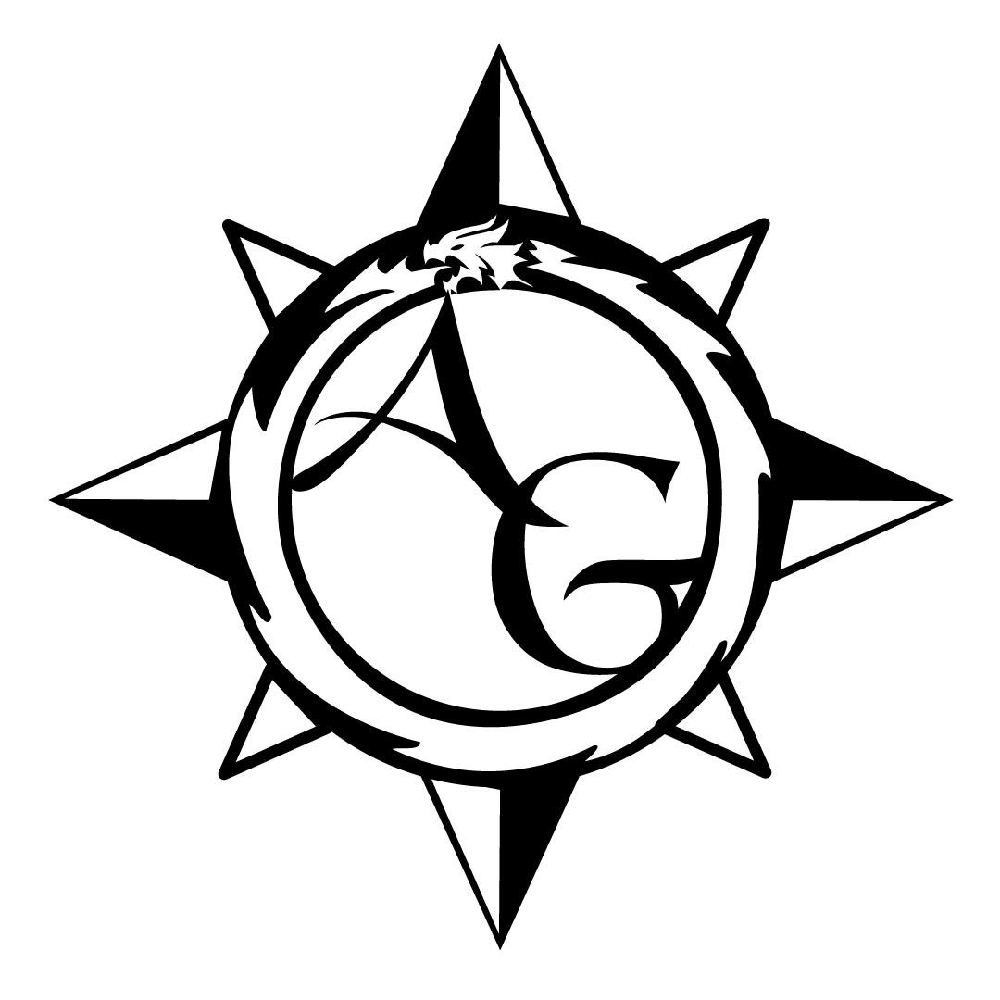
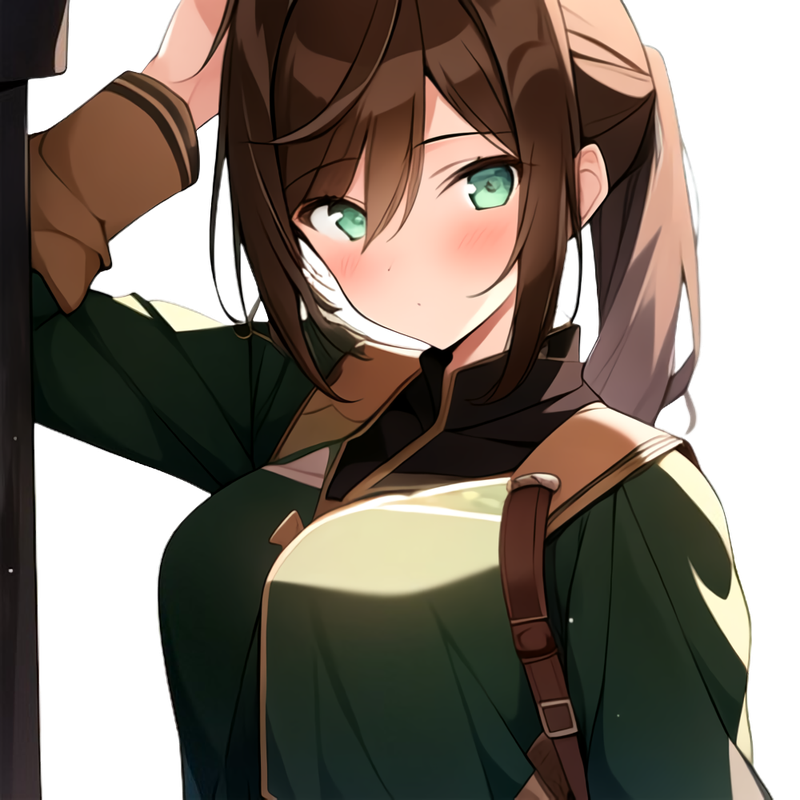
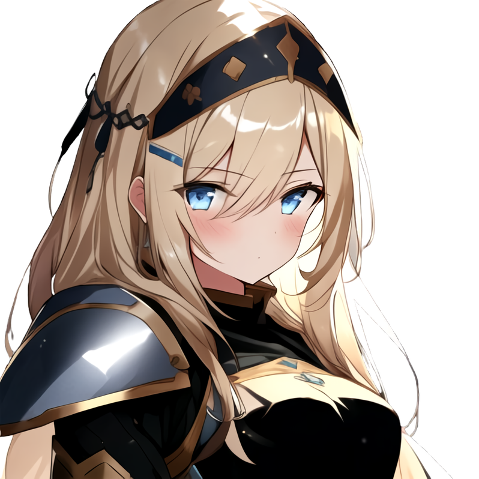

Introducción
La universidad mágica les presenta 3 opciones a los estudiantes, realizar una tesis sobre un tema mágico en particular, mago de combate (ir al frente durante 1 año y esperar regresar vivo) o investigación de campo. Yo Kaelith, fui una tonta, creí que tomando la investigación de campo seria lo más sencillo, pero resulta que acabé en Los páramos Amber, en la región inexplorada de Ouphix, con un grupo de aventureros de lo más variopinto. Parece el inicio de una novela fantástica, ¿pero quien será el protagonista de esta historia?
Joven estudiante de ultimo año de la universidad mágica de Penderheven, nunca ha sido la mejor estudiante, aplicando la ley del mínimo esfuerzo a todos sus trabajos, aunque siempre demostró ser superior a la media a pesar de no esforzarse, nadie sabe realmente de lo que es capaz. Se encuentra realizando su trabajo de graduación en los páramos Amber, acompañando como erudita y maga al grupo “Indomable fury”.
Grupo de aventureros de clase B, está formado por: Sarina Tallmoon(22) la más joven del grupo y una experta cazadora, Callin Wisestride(35) el líder del grupo, un berserk de primera, veterano de la guerra del golfo, Cayne Prideflaw(28) último sobreviviente de la casa Prideflaw, un guerrero que lucha por el honor de su casa caída y Arlyse Highgaze(50) una alquimista un tanto tétrica, a pesar de llevar años en el grupo se desconoce sus motivaciones y orígenes, pero es evidente que ama producir posiciones y herramientas capaces de exterminar nidos de trasgos en minutos.
La miembro más joven de Indomable fury, es una experta en supervivencia, prediciendo condiciones climáticas, creando trampas y detectándolas. A pesar de su corta edad tiene una puntería con el arco que no deja nada que envidiar a los elfos, se unió al grupo de aventureros buscando salir de la pobreza, siendo esta su último encargo antes de dedicarse a lo que realmente ama.
Paladina perteneciente a la iglesia del Santísimo, fue enviada en una misión por la cardenal, con el fin de explorar unas ruinas cercanas. Se unió al grupo de aventureros Indomable fury a pesar de ser unos barbaros, debido a su amplia experiencia y capacidad de supervivencia. Joselane busca con esta misión poder acercarse más a Dios y de paso convertir a los barbaros aventureros en el Santísimo.
